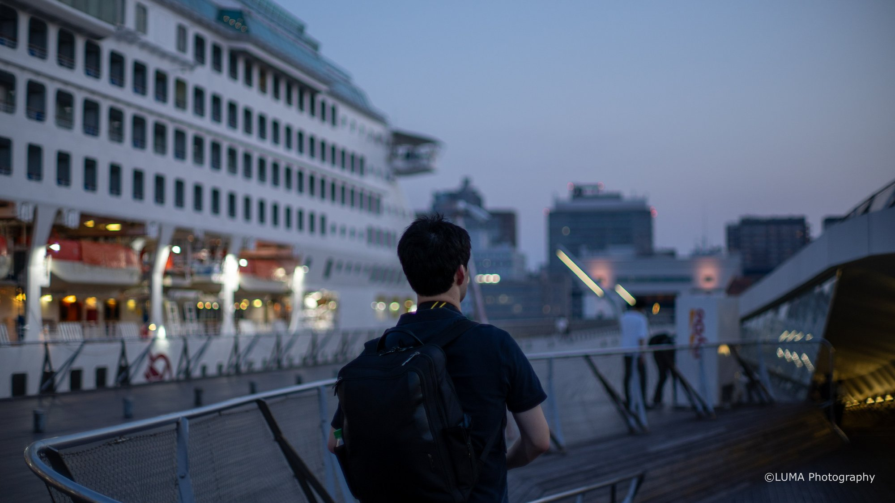
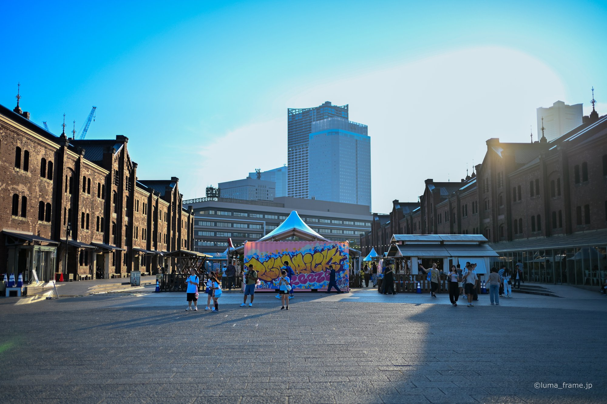
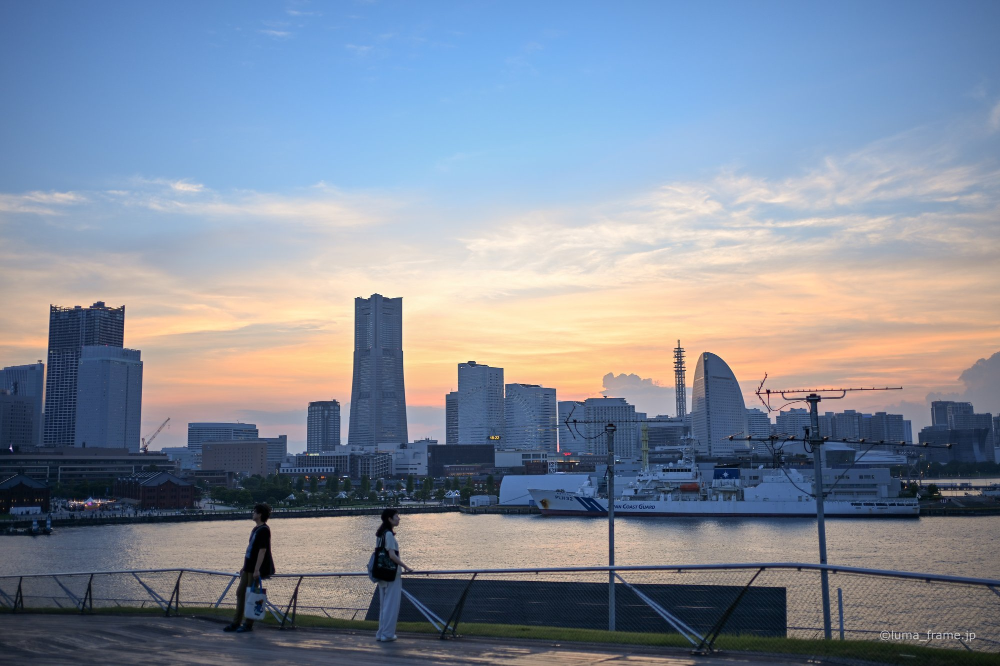
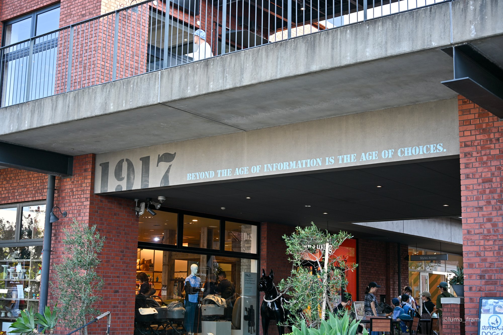
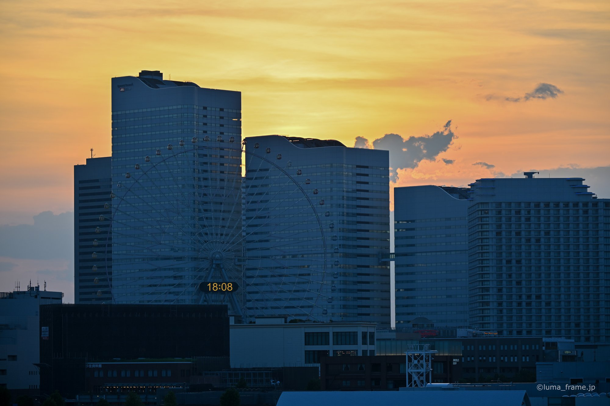
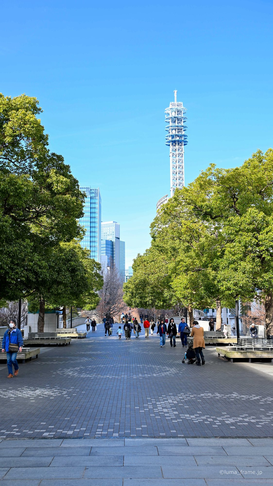
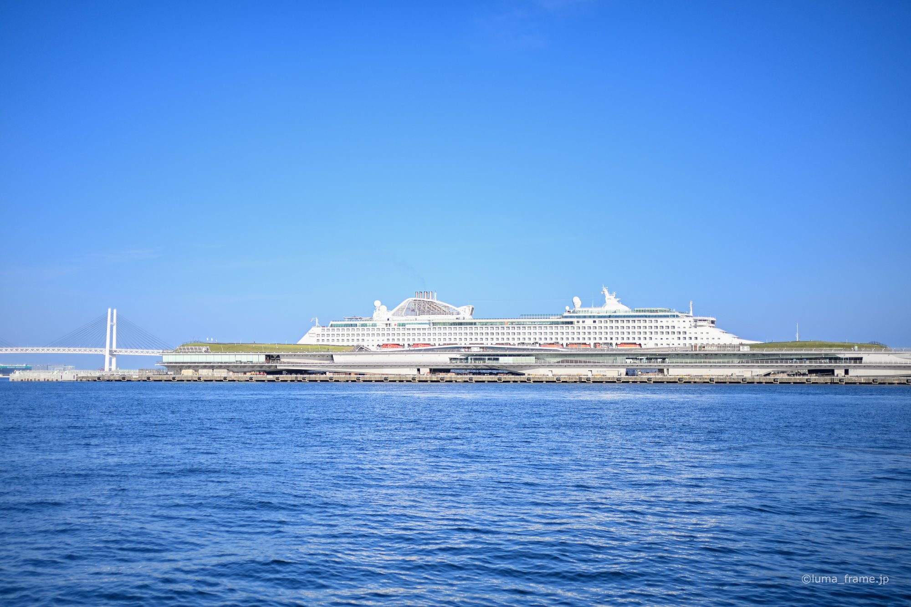

Sho's note
Osanbashi pier
The roof is open 24 hours. In 2018 Nikkei Plus 1 ranked its night view of Minato Mirai the best free night view in Japan.
I'm based in Yokohama, and it's where I'd start anyone's first look at Japan's harbour towns. We walk the waterfront from the Red Brick Warehouse to Chinatown, at your pace, in a private group of up to six.
Planned lengths. One price per private group of up to six.
Chinatown, Yamashita Park and the Osanbashi pier roof, all on foot.
Price TBDThe AIR CABIN from Sakuragicho, then the waterfront to Chinatown.
Price TBDSankeien's garden of old buildings, the Bluff and the harbour at dusk.
Price TBDMinato Mirai and the CUPNOODLES MUSEUM on one day, Sankeien or Kamakura on the other.
Price TBD
I spent nine years in Brisbane, from junior high to the end of university, and I guide in English or Japanese. I check our food stops with each shop before the day.

The roof is open 24 hours. In 2018 Nikkei Plus 1 ranked its night view of Minato Mirai the best free night view in Japan.

Warehouses from the late Meiji and early Taisho eras, reopened in 2002. It's about 15 minutes' walk from Sakuragicho Station.
A 1930 liner that hit mines three times as a hospital ship in the war and didn't sink. Charlie Chaplin used its first-class suite, and it's 300 yen to go aboard.
The harbour sets the shape of the city. Yamashita Park was built on rubble from the Great Kanto Earthquake and opened in 1930. The Hikawa Maru, a liner from the same year, is moored right beside it. Along the water, the roof of Osanbashi pier is a park that never closes, curved like a whale's back.
Near the park, Chinatown has more than 600 shops, which grew from the Chinese merchants who came after the port opened. Up on the Bluff, Berrick Hall, a British trader's house designed in 1930, is free to walk through.





Not at the moment. The Sky Garden deck is closed for major repairs and isn't due to reopen until 2028 or later.
Kiyoken's shumai has been sold since 1928, made with pork and dried scallop. In Chinatown we can try steamed buns. I skip almond jelly and mooncakes, since they often contain apricot kernel or almond, and I check the ingredients at each shop for yours.
We move indoors: the Hikawa Maru, the CUPNOODLES MUSEUM YOKOHAMA, the Red Brick Warehouse and the Yamate Western houses.
Tell me your date, how many of you there are and anything you can't eat. I'll send back a route and a free quote.
Ask for a free quote →